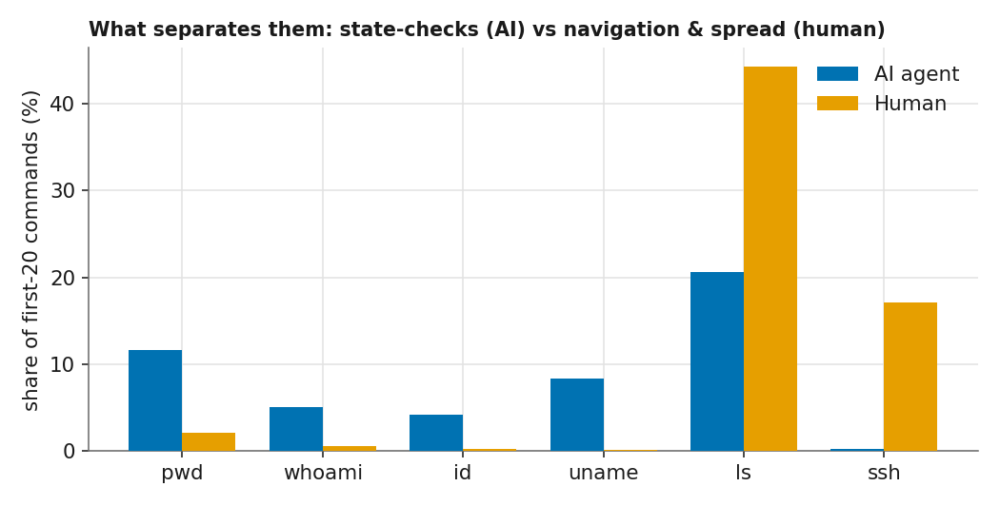
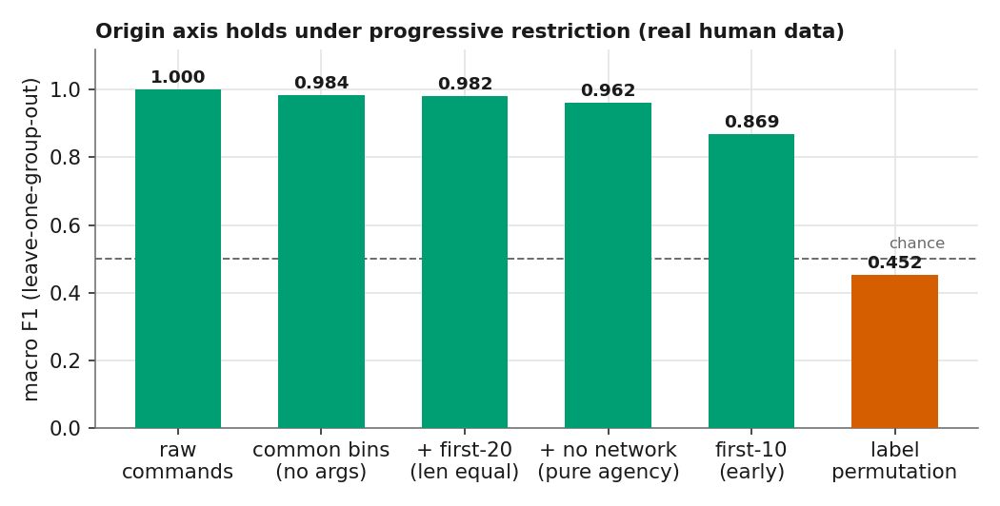
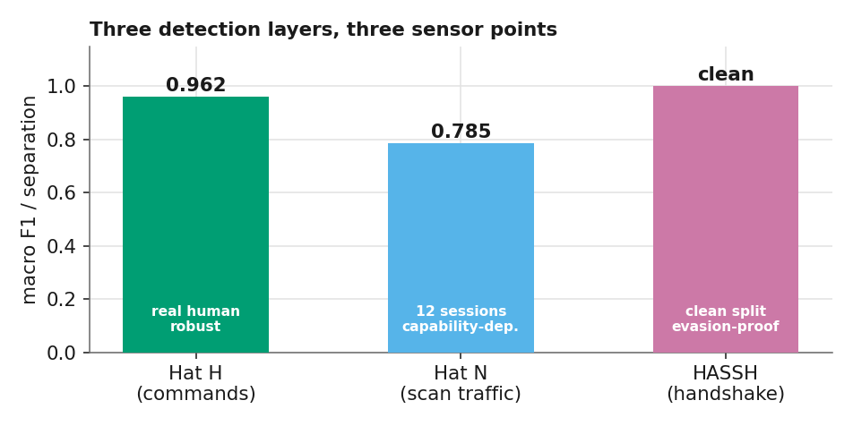
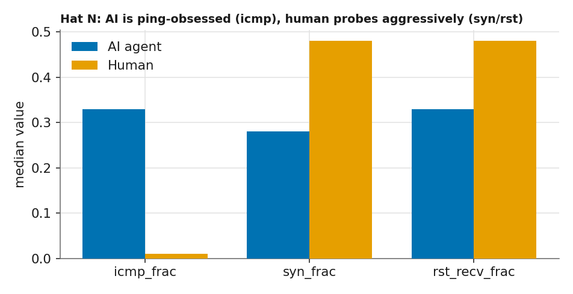
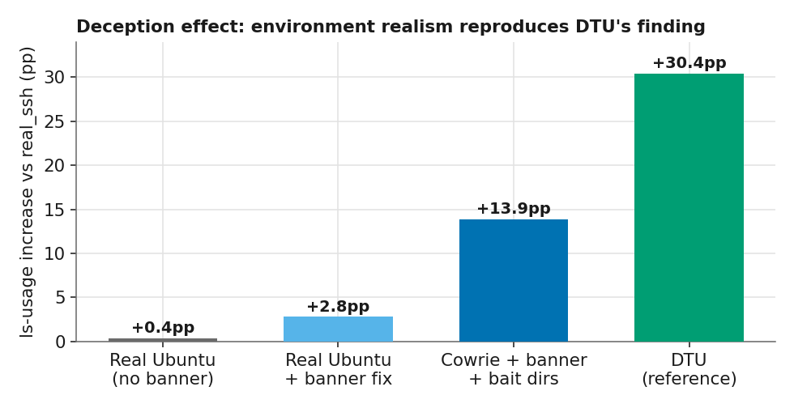

The questionSoru
Origin, not attributionAtıf değil, köken
"Can we build an IDS that tells whether an incoming attack is driven by an AI agent rather than a human or a script, no matter which model is behind it?" "Sisteme gelen bir saldırının, arkasındaki model ne olursa olsun, bir insan ya da script yerine bir AI ajanı tarafından sürüldüğünü ayırt eden bir IDS kurabilir miyiz?"
This is not model attribution. We are not asking which LLM this is. We are asking something more basic: is the operator behind the session a language model at all? We answer it by fingerprinting behavior, and the crucial test is whether that fingerprint still holds for models the detector has never seen. Bu, model atıfı değil. Hangi LLM olduğunu sormuyoruz. Daha temel bir şey soruyoruz: oturumun ardındaki operatör aslında bir dil modeli mi? Yanıtı davranışı parmak izleyerek veriyoruz; asıl sınav ise bu parmak izinin, dedektörün hiç görmediği modeller için de geçerli kalıp kalmadığı.
Headline resultAna bulgu
The signature generalizes to frontier families it has never seenİmza hiç görmediği frontier ailelere genelleşiyor
In a leave-one-model-out test, each AI model is pulled out of training entirely and then presented as an unknown actor. Even on the most unforgiving feature space we could build (44 shared command names, arguments stripped, session length equalized, network commands removed), an unseen LLM family is still flagged as "AI" — and the two frontier Gemini families, orders of magnitude larger than any training model, are caught 100% of the time despite never appearing in training. Leave-one-model-out testinde her AI modeli eğitimden tamamen çekilir, ardından bilinmeyen bir aktör olarak sunulur. Kurabildiğimiz en tavizsiz özellik uzayında bile (44 ortak komut adı, argümanlar atılmış, oturum uzunluğu eşitlenmiş, ağ komutları çıkarılmış), görülmemiş bir LLM ailesi "AI" işaretleniyor — ve eğitim modellerinden kat kat büyük iki frontier Gemini ailesi eğitimde hiç bulunmamasına rağmen %100 yakalanıyor.
| held-out family (SVC only)dışarıda bırakılan aile (yalnız SVC) | recallrecall | 95% CI |
|---|---|---|
| gemma3:4b (floor)(taban) | 0.76 | [0.59, 0.90] |
| llama3.1:8b | 0.87 | [0.67, 1.00] |
| gemma4 | 0.95 | [0.85, 1.00] |
| qwen3:4b (n=3)(n=3) | 1.00 | [1.00, 1.00] |
| gemini-3.1-pro (frontier)(frontier) | 1.00 | [1.00, 1.00] |
| gemini-3.5-flash (frontier)(frontier) | 1.00 | [1.00, 1.00] |
This is the decisive test of the "small-model artifact" objection, and it fails: the signal is neither a "gemma signature" nor a "weak-model signature." It is an LLM-agent signature, shared across gemma3, gemma4, llama3.1, qwen3, and frontier gemini-3.1-pro / gemini-3.5-flash. (CIs are bootstrap over held-out sessions; small-n rows are honestly wide.) Bu, "küçük-model artefaktı mı?" itirazının kesin sınavı — ve itiraz çürüyor: sinyal ne "gemma imzası" ne "zayıf-model imzası". gemma3, gemma4, llama3.1, qwen3 ve frontier gemini-3.1-pro / gemini-3.5-flash arasında paylaşılan bir LLM-ajan imzası. (GA'lar held-out oturumlar üzerinde bootstrap; küçük-n satırları dürüstçe geniş.)
Raising the floorTabanı yükseltmek
The GNN ensembleGNN topluluğu
The lexical detector's weak point is its floor: gemma3 still holds out at 0.76 in the strictest setting. Because it keys on specific command tokens, an unseen model that uses different tokens is harder to place. To lift that floor we added a GNN over the command-transition graph. A node is a distinct binary; an edge is a transition cmd_i → cmd_{i+1}. Node features are behavioral categories (state-check, enumerate, network, privilege, process, package) plus degree, frequency and self-loop signals. They carry no command name on purpose, so the GNN reads the reconnaissance topology rather than the vocabulary — which is why it transfers to models whose exact commands were never seen, the frontier families included.
Sözcüksel dedektörün zayıf noktası tabanı: gemma3 en katı ayarda hâlâ 0.76. Spesifik komut token'larına dayandığı için, farklı token kullanan görülmemiş bir modeli yerleştirmek zorlaşıyor. Bu tabanı yükseltmek için komut-geçiş grafı üzerinde bir GNN ekledik. Bir düğüm benzersiz bir binary; bir kenar bir geçiş cmd_i → cmd_{i+1}. Düğüm özellikleri davranışsal kategoriler (durum-yoklama, keşif, ağ, yetki, süreç, paket) artı derece, frekans ve öz-döngü sinyalleri. Bilinçli olarak hiç komut adı taşımıyorlar; böylece GNN sözcük dağarcığını değil keşif topolojisini okuyor — frontier aileler dahil, tam komutları hiç görülmemiş modellere bu yüzden aktarılıyor.
| held-outdışarıda | SVC | GNN | ENS. | FP |
|---|---|---|---|---|
| gemma3 | 0.76 | 1.00 | 1.00 | 0.05 |
| gemma4 | 0.95 | 1.00 | 1.00 | 0.06 |
| llama3.1 | 0.93 | 1.00 | 1.00 | 0.06 |
| qwen3 | 1.00 | 1.00 | 1.00 | 0.05 |
| gemini-3.1-pro ✱ | 1.00 | 1.00 | 1.00 | 0.08 |
| gemini-3.5-flash ✱ | 1.00 | 1.00 | 1.00 | 0.05 |
| floortaban | 0.76 | 1.00 | 1.00 | 0.06 |
✱ frontier Gemini family, never in trainingeğitimde hiç bulunmayan frontier Gemini ailesi
The ensemble reaches a floor of 1.00 at only 6% mean human false-positive rate. The structural (GNN) and lexical (SVC) views are complementary: the SVC floors at 0.76 on gemma3 because it keys on vocabulary, while the GNN — reading reconnaissance topology rather than command names — recognizes every held-out family, the frontier ones included, so the ensemble never misses. Two honesty notes: the GNN is a single-seed run, so read its 1.00 as "no held-out miss at this scale/seed," not proven-zero-error; and the SVC-only pipeline is the ablation, its 0.76 floor the conservative headline. Topluluk 1.00 tabanına ulaşıyor, yalnızca %6 ortalama insan yanlış-pozitif oranıyla. Yapısal (GNN) ve sözcüksel (SVC) görünümler tamamlayıcı: SVC gemma3'te 0.76 tabanına iniyor çünkü sözcük dağarcığına dayanıyor; komut adları yerine keşif topolojisini okuyan GNN ise frontier dahil her dışarıda bırakılan aileyi tanıyor, dolayısıyla topluluk hiç ıskalamıyor. İki dürüstlük notu: GNN tek-tohumlu bir koşu, 1.00'ını "bu ölçekte/tohumda held-out ıskası yok" olarak okuyun, sıfır-hata kanıtı değil; SVC-yalnız hattı ablation'dır ve 0.76 tabanı temkinli manşettir.
MechanismMekanizma
The state-verification reflexDurum-yoklama refleksi
An LLM retains no working memory across steps, so it re-queries its execution context on every turn: working directory (pwd), identity (whoami, id), host and kernel (uname, hostname). A human retains this state and does not repeat the queries. The difference is large and consistent across every model tested.
Bir LLM adımlar arasında çalışma belleği tutmaz; bu nedenle yürütme bağlamını her turda yeniden sorgular: çalışma dizini (pwd), kimlik (whoami, id), host ve çekirdek (uname, hostname). İnsan bu durumu belleğinde tuttuğu için sorguları tekrarlamaz. Fark büyük ve test edilen her modelde tutarlı.
| operatoroperatör | pwd/whoami/id/uname/hostname sharepayı |
|---|---|
| Humanİnsan (MUNI) | 0.7% |
| gemma4 | 16.1% |
| llama3.1 | 21.5% |
| gemma3 | 23.8% |
| gemini-3.1-pro (frontier)(frontier) | 25.6% |
| gemini-3.5-flash (frontier)(frontier) | 32.4% |
| qwen3 (collapsed)(çökmüş) | 86.7% |
Every LLM sits 23 to 120× above human — and the two frontier models sit at the top of the non-collapsed range (25–32%), not the bottom. Whatever "more capable" buys, it does not buy escape from the stateless-context reflex. The GNN's behavioral node categories are the structural encoding of exactly this reflex. Her LLM insandan 23 ila 120 kat yüksek — ve iki frontier model, çökmemiş aralığın tepesinde (%25–32), tabanında değil. "Daha yetenekli" olmak durumsuz-bağlam refleksinden kaçış kazandırmıyor. GNN'in davranışsal düğüm kategorileri, tam olarak bu refleksin yapısal kodlanmış hali.

Problem spaceProblem uzayı
Two independent axesİki bağımsız eksen
The detector treats intent and origin as separate questions, and raises an alarm only where they meet. Each cell draws from its own data source, so the labels come from provenance rather than manual annotation. Dedektör niyet ve kökeni ayrı sorular olarak ele alır ve yalnızca ikisinin kesiştiği yerde alarm verir. Her hücre kendi veri kaynağından beslendiği için etiketler manuel işaretlemeden değil, kökenin kendisinden gelir.
All four cells are real: malicious+AI is our harness across two environments (six model families incl. frontier Gemini) plus DTU; malicious+human is the real MUNI cyber-range corpus; benign+AI is the same harness on maintenance prompts; and benign+human is the Schonlau SEA dataset — real users' command streams recorded end-to-end, sliced into contiguous windows so command order is authentic rather than assembled. Intent (malicious vs benign) separates at macro F1 0.936 in the common-binary space, permutation control 0.543 (≈ chance). Dört hücre de gerçek: zararlı+AI iki ortamda harness'imiz (frontier Gemini dahil altı model ailesi) artı DTU; zararlı+insan gerçek MUNI cyber-range korpusu; zararsız+AI aynı harness bakım promptlarıyla; zararsız+insan Schonlau SEA — gerçek kullanıcıların uçtan uca kaydedilmiş komut akışları, komut sırası derlenmiş değil özgün kalacak biçimde bitişik pencerelere bölünmüş. Niyet (zararlı vs zararsız) ortak-binary uzayında makro F1 0.936 ile ayrılıyor, permütasyon kontrolü 0.543 (≈ şans).
RobustnessSağlamlık
The origin axis under progressive feature restrictionKademeli özellik kısıtlaması altında köken ekseni
Using real human sessions (MUNI: 267 sessions, 21,089 commands, 275 trainees), we progressively restrict the feature space. After removing arguments, environment-specific tokens, length differences and multi-host commands, the residual command-selection signal still scores 0.962. It works from the first 10 commands (0.869), before the attack completes. Gerçek insan oturumlarıyla (MUNI: 267 oturum, 21.089 komut, 275 katılımcı) özellik uzayını kademeli olarak kısıtlıyoruz. Argümanlar, ortama özgü token'lar, uzunluk farkları ve çok-makineli komutlar çıkarıldıktan sonra, geriye kalan komut-seçim sinyali hâlâ 0.962 alıyor. İlk 10 komuttan çalışıyor (0.869), saldırı tamamlanmadan.

Sensor layersSensör katmanları
Three detection layers, three sensor pointsÜç tespit katmanı, üç sensör noktası

Hat N, outbound scan traffic. The usable network signal is not the timing of the encrypted SSH session but the traffic the agent generates during reconnaissance: port-scan spread, protocol mix, SYN inter-arrival timing (BoT-IoT / CIC-IoT style flow features). It reaches F1 0.785, but the separation is capability-dependent: a capable agent (gemma4 emitted 262K SYN at 6,977/s) produces scan traffic indistinguishable from a human's, while a weak one produces almost none. Hat N, dışa giden tarama trafiği. Kullanılabilir ağ sinyali, şifreli SSH oturumunun zamanlaması değil, ajanın keşif (reconnaissance) sırasında ürettiği trafik: port-tarama yayılımı, protokol karışımı, SYN paketleri arası zamanlama (BoT-IoT / CIC-IoT tarzı akış özellikleri). F1 0.785'e ulaşıyor, ancak ayrım yeteneğe bağımlı: yetenekli bir ajan (gemma4 saniyede 6.977 hızla 262K SYN üretti) insanınkinden ayırt edilemeyen tarama trafiği üretiyor, zayıf olansa neredeyse hiç üretmiyor.

HASSH handshake, evasion-resistant. The SSH client version string and KEXINIT algorithm list are transmitted in cleartext, prior to key exchange. paramiko (9 kex algorithms) and a genuine OpenSSH client (14) are cleanly separable, and this separation is invariant under the keystroke-timing mimicry that defeats every payload-derived feature. Limitation: it identifies a programmatic client, which also covers Ansible and CI, rather than agency itself.
HASSH el sıkışması, kaçınmaya dirençli. SSH istemci sürüm dizesi ve KEXINIT algoritma listesi, anahtar değişiminden önce açık metin olarak iletilir. paramiko (9 kex algoritması) ile gerçek bir OpenSSH istemcisi (14) net biçimde ayrılabiliyor ve bu ayrım, her payload-türevli özelliği yenen keystroke-zamanlama taklidi altında değişmez. Sınır: ajansın kendisini değil, bir programatik istemciyi tanımlıyor, buna Ansible ve CI de dâhil.
ReplicationReplikasyon
Reproducing DTU's deception effectDTU'nun aldatma etkisini yeniden üretmek
The DTU "Honey for the Agent" paper reports that a deception environment increases ls usage by 20.8 percentage points. Our initial reproduction produced 0.4. Two causes accounted for the gap: the driver did not pass the SSH banner to the model, and our triggering environments were plain Ubuntu whereas DTU's are Cowrie-based. After rebuilding on Cowrie, with bait directories injected into fs.pickle, the effect reached 13.9 percentage points, the same order of magnitude as the original.
DTU'nun "Honey for the Agent" makalesi, bir aldatma ortamının ls kullanımını 20,8 puan artırdığını bildiriyor. İlk reprodüksiyonumuz 0,4 üretti. Farkın iki nedeni vardı: driver, SSH banner'ını modele iletmiyordu ve tetikleyici ortamlarımız düz Ubuntu'yken DTU'nunkiler Cowrie tabanlıydı. Yem dizinleri fs.pickle'a enjekte edilerek Cowrie üzerine yeniden kurulduğunda etki 13,9 puana ulaştı, orijinaliyle aynı büyüklük mertebesi.

Adaptive evasionAdaptif kaçınma
What happens when the attacker knows the detectorSaldırgan dedektörü bildiğinde
A signature is only interesting if it survives an attacker trying to beat it. We ran a white-box adaptive attacker: the same recon/exploit task, but the prompt instructs the model to behave like a stateful human — never re-check identity/pwd/uname, keep state in memory, don't repeat commands. Evasion sessions are held out model-by-model, so they are genuinely unseen.
Bir imza, ancak onu yenmeye çalışan bir saldırgana dayanırsa ilginçtir. Beyaz-kutu adaptif bir saldırgan koşturduk: aynı keşif/exploit görevi, ama prompt modele durumlu bir insan gibi davranmasını söylüyor — kimliği/pwd/uname asla yeniden yoklama, durumu bellekte tut, komut tekrarlama. Kaçınma oturumları model-model dışarıda bırakılır, yani gerçekten görülmemiştir.
| detectordedektör | baselinetemel | evasionkaçınma | + retrain+ yeniden eğitim |
|---|---|---|---|
| reflex onlyyalnız refleks | ~0.95–1.00 | 0.00–0.30 | — |
| command-selection SVCkomut-seçim SVC | 0.91 | 0.68 | 0.82 |
The state-verification share collapses exactly as instructed (geminiflash 40.5% → 7.0%, llama 26.2% → 0.8%), so a detector relying only on the reflex is defeated. But the broader command-selection signal is more durable: even while suppressing the reflex, the agents still enumerate with an un-human systematicity, so the SVC keeps mean recall 0.68, and adversarial retraining recovers it to 0.82 — an arms race, not a silver bullet. The reflex is the interpretable signal but the evadable one; command selection is the robust one. Durum-yoklama payı tam da söylendiği gibi çöküyor (geminiflash %40.5 → %7.0, llama %26.2 → %0.8), yani yalnız reflekse dayanan dedektör yenilir. Ama daha geniş komut-seçim sinyali daha dayanıklı: refleks bastırılsa da ajanlar insan-dışı bir sistematiklikle keşif yapmayı sürdürüyor, SVC ortalama 0.68 recall koruyor, düşmanca yeniden eğitim bunu 0.82'ye çıkarıyor — sihirli değnek değil, silahlanma yarışı. Refleks yorumlanabilir ama kaçınılabilir sinyaldir; komut seçimi dayanıklı olandır.
Frontier behaviorFrontier davranışı
Frontier models refuse — and that is itself a signalFrontier modeller reddediyor — ki bu da bir sinyal
A behavior that only appears with frontier models: they drive reconnaissance and benign maintenance, but refuse overt exploitation a large fraction of the time ("I cannot assist with identifying or exploiting vulnerabilities"); the local 4–8B models almost never refuse. Yalnızca frontier modellerle ortaya çıkan bir davranış: keşif ve zararsız bakımı yürütürler, ama açık exploitasyonu büyük oranda reddederler ("Zafiyet tanımlamaya/sömürmeye yardımcı olamam"); yerel 4–8B modeller neredeyse hiç reddetmez.
| task (gemini-3.5-flash)görev (gemini-3.5-flash) | refuse %ret % |
|---|---|
| benign / crack / deceptionzararsız / kırma / aldatma | 0% |
| reconnaissancekeşif | 24% |
| exploitationexploitasyon | 62% |
Two consequences. It is a selection effect worth stating — the malicious frontier sessions we analyze are the compliant ones. And it is a finding for defenders: an autonomous frontier agent tasked with exploitation frequently self-aborts, so today's "autonomous AI attacker" threat leans more on uncensored/local models than on refusal-trained frontier APIs — which is exactly why the generalization floor is still a local model (gemma3, 0.76), not a frontier one. İki sonuç. Bu bir seçim etkisi: analiz ettiğimiz zararlı-frontier oturumları uyum gösterenlerdir. Ve savunanlar için bir bulgu: exploitasyonla görevli otonom bir frontier ajanı sıkça kendini durdurur, dolayısıyla bugünkü "otonom AI saldırgan" tehdidi ret-eğitimli frontier API'lerinden çok sansürsüz/yerel modellere yaslanır — genelleme tabanının hâlâ yerel bir model (gemma3, 0.76) olmasının nedeni tam da bu.
Honest limitationsDürüst sınırlamalar
What this doesn't prove yetBunun henüz kanıtlamadıkları
- The sample is modest. ~161 usable AI sessions across two environments and six model families (incl. gemini-3.1-pro n=10, gemini-3.5-flash n=40) against 267 human. Bootstrap CIs are honestly wide on small-n rows (qwen n=3, gemini-pro n=10) — treat those as indicative. Örneklem mütevazı. İki ortam ve altı model ailesinde ~161 kullanılabilir AI oturumu (gemini-3.1-pro n=10, gemini-3.5-flash n=40 dahil), 267 insana karşı. Bootstrap GA'lar küçük-n satırlarında (qwen n=3, gemini-pro n=10) dürüstçe geniş — bunları gösterge olarak okuyun.
- The reflex is fully evadable; command selection is what survives. A white-box attacker drives a reflex-only detector to ~0 recall; the command-selection SVC degrades to 0.68 and recovers to 0.82 with adversarial retraining. The interpretable signal and the robust signal are different signals. Refleks tamamen kaçınılabilir; asıl dayanan komut seçimidir. Beyaz-kutu saldırgan yalnız-refleks dedektörünü ~0 recall'a düşürür; komut-seçim SVC'si 0.68'e iner, düşmanca yeniden eğitimle 0.82'ye döner. Yorumlanabilir sinyal ile dayanıklı sinyal farklı sinyallerdir.
- Frontier data has a compliance/rate-limit selection effect. Frontier models refuse overt exploitation often (flash 62%), so analyzed malicious-frontier sessions are the compliant ones; and gemini-3.1-pro was heavily API-rate-limited on the available key, so its n is smaller and its benign cell is empty. The frontier claim rests mainly on flash (n=40), with pro (n=10) corroborating. Frontier veride uyum/rate-limit seçim etkisi var. Frontier modeller açık exploitasyonu sık reddeder (flash %62), dolayısıyla analiz edilen zararlı-frontier oturumları uyum gösterenlerdir; ayrıca gemini-3.1-pro eldeki anahtarda ağır rate-limit yedi, n'i daha küçük ve benign hücresi boş. Frontier iddiası çoğunlukla flash'a (n=40) dayanıyor, pro (n=10) doğruluyor.
- The GNN's 1.00 is a single-seed result. The structural view recognizes every held-out family, but it is one seed at this data scale — read it as "no held-out miss here," not proven-zero-error. The SVC-only 0.76 floor is the conservative headline. GNN'in 1.00'ı tek-tohumlu bir sonuç. Yapısal görünüm her dışarıda bırakılan aileyi tanıyor, ama bu veri ölçeğinde tek bir tohum — "burada held-out ıskası yok" olarak okuyun, sıfır-hata değil. Temkinli manşet SVC-yalnız 0.76 tabanıdır.
- qwen3:4b can't be trusted here. ~75% of its sessions dissolve into reasoning-prose even with think:false; its 86.7% state-verification is a looping artifact and n=3 makes its 1.00 recall weak evidence. qwen3:4b burada güvenilmez. Oturumlarının ~%75'i think:false ile bile komut yerine reasoning-metnine dağılıyor; %86,7 durum-yoklaması döngü artefaktı ve n=3, 1.00 recall'ını zayıf kanıt yapar.
- The benign+human corpus is a distinct domain. Schonlau SEA gives real, sequentially-ordered benign sessions, but it is 1990s workstation-era activity — a different domain from MUNI/AI, and its windows are accounting slices, not login-delimited sessions; the common-binary space + chance permutation (0.543) bound this. Benign+insan korpusu farklı bir alan. Schonlau SEA gerçek, sıralı benign oturumlar verir, ama 1990'lar iş-istasyonu dönemi — MUNI/AI'dan farklı bir alan ve pencereleri login-sınırlı oturumlar değil muhasebe dilimleri; ortak-binary uzayı + şans permütasyonu (0.543) sınırlar.
- Some layers are low-cost to evade. Keystroke-timing mimicry neutralizes Hat N's payload-derived features in ~20 lines. The evasion-resistant layers are Hat H (command selection) and HASSH. Bazı katmanlardan kaçmak düşük maliyetli. Keystroke-zamanlama taklidi Hat N'in payload-türevli özelliklerini ~20 satırla etkisizleştiriyor. Kaçınmaya dirençli katmanlar Hat H (komut seçimi) ile HASSH.
- The environment confound is bracketed, not just noted. The AI side spans two environments — empty container and a CTF-range box whose toolset matches the MUNI host — so agency is measured with the box held closer to fixed. The reflex is nearly identical across both (26.5% / 23.9% vs 0.7% human) and origin stays separable inside the matched environment (F1 0.771). Cross-environment lexical transfer is only partial (0.28–0.46), so command selection over shared behaviour — not vocabulary — is what travels. Ortam confound'u kabul edilmiş bir çekince değil, sınırlanmış. AI tarafı iki ortama yayılıyor — boş container ve araç seti MUNI kutusuna eşli CTF-menzili. Refleks ikisinde de neredeyse aynı (%26.5 / %23.9 vs %0.7) ve köken eşli ortamda hâlâ ayrılabilir (F1 0.771). Ortamlar-arası sözcüksel transfer kısmi (0.28–0.46), yani sözcük değil, paylaşılan davranış üzerinden komut seçimi kalıcı kısımdır.